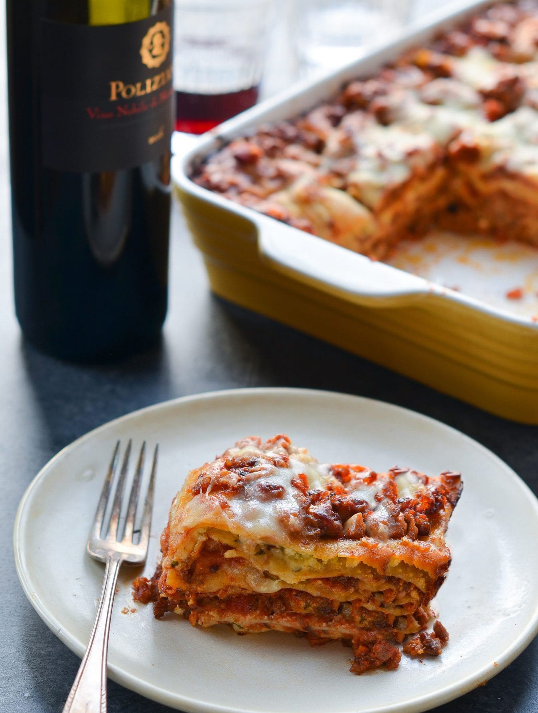

Lasagna
Home

Ingredients
- Lasagna noodles
- Ground beef
- Onion
- Garlic
- Tomato sauce
- Ricotta cheese
- Mozzarella cheese
- Parmesan cheese
- Eggs
- Italian seasoning
- Salt
- Pepper
Steps
- Preheat oven to 350 degrees F (175 degrees C).
- In a skillet over medium heat, brown ground beef, onion and garlic; drain fat. Mix in salt, oregano, and basil.
- In a large bowl, mix together ricotta cheese with egg, remaining parsley, and 1/2 teaspoon salt.
- To assemble, spread 1 1/2 cups of meat sauce in the bottom of a 9x13 inch baking dish. Arrange 6 noodles lengthwise over meat sauce. Spread with one half of the ricotta cheese mixture. Top with a third of mozzarella cheese slices. Spoon 1 1/2 cups meat sauce over mozzarella, and sprinkle with 1/4 cup Parmesan cheese. Repeat layers, and top with remaining mozzarella and Parmesan cheese. Cover with foil: to prevent sticking, either spray foil with cooking spray, or make sure the foil does not touch the cheese.
- Bake in preheated oven for 25 minutes. Remove foil, and bake an additional 25 minutes. Cool for 15 minutes before serving.
- Enjoy!